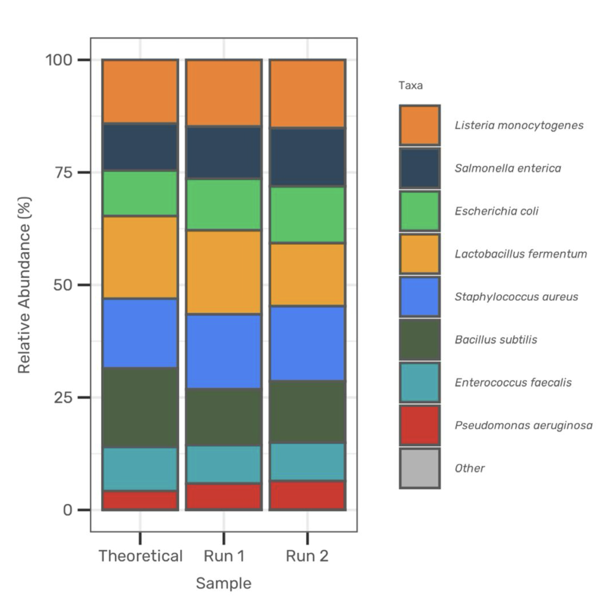
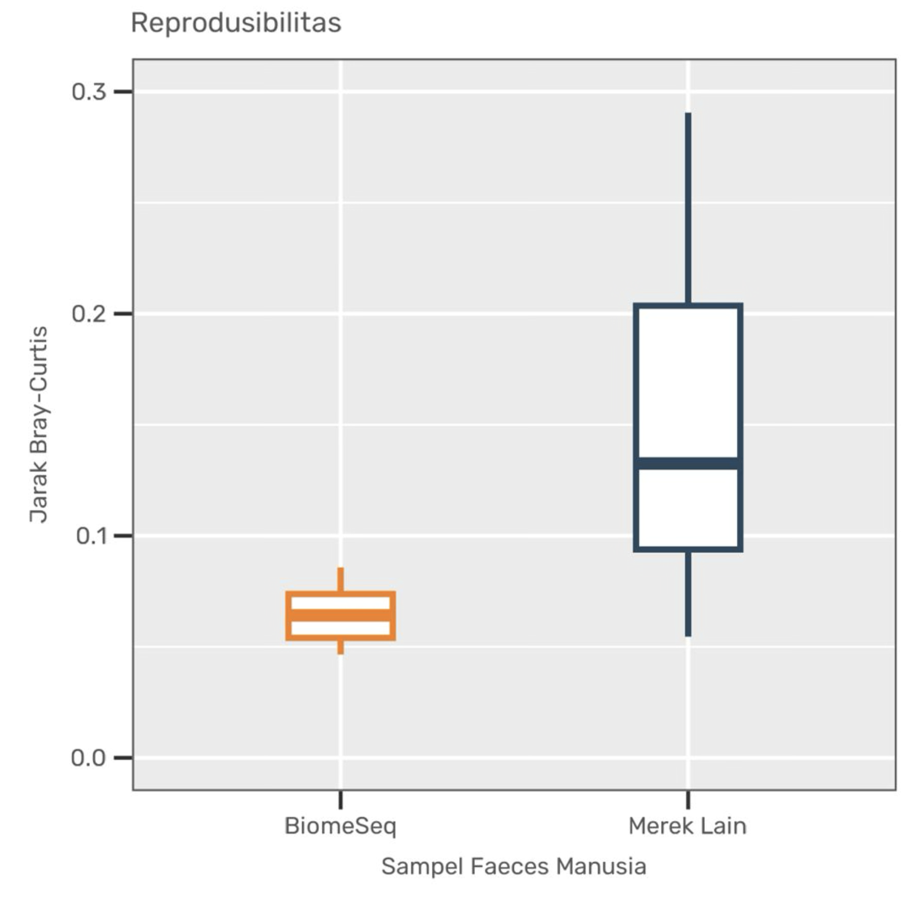
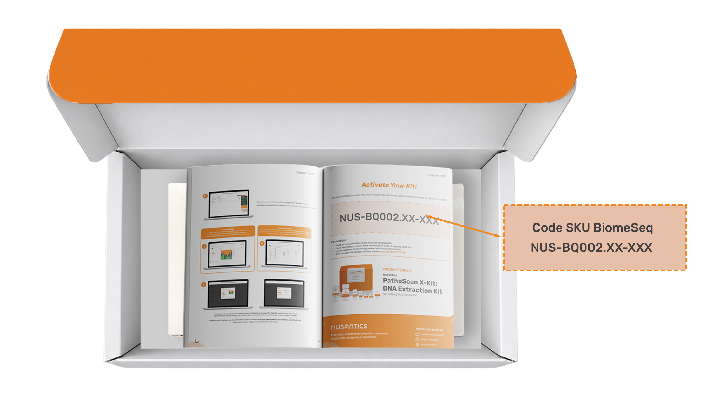
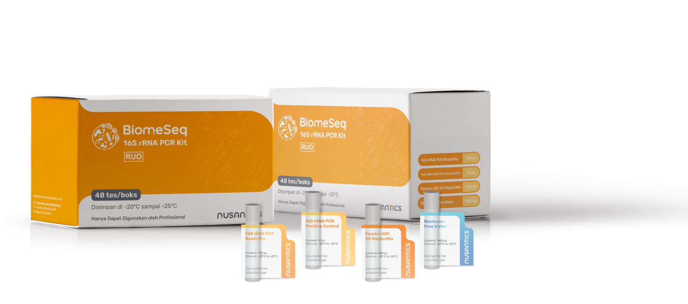
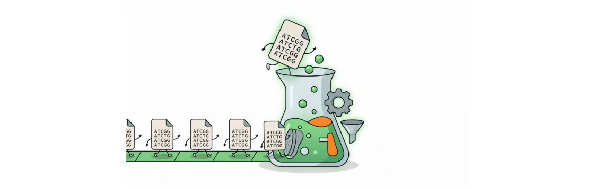
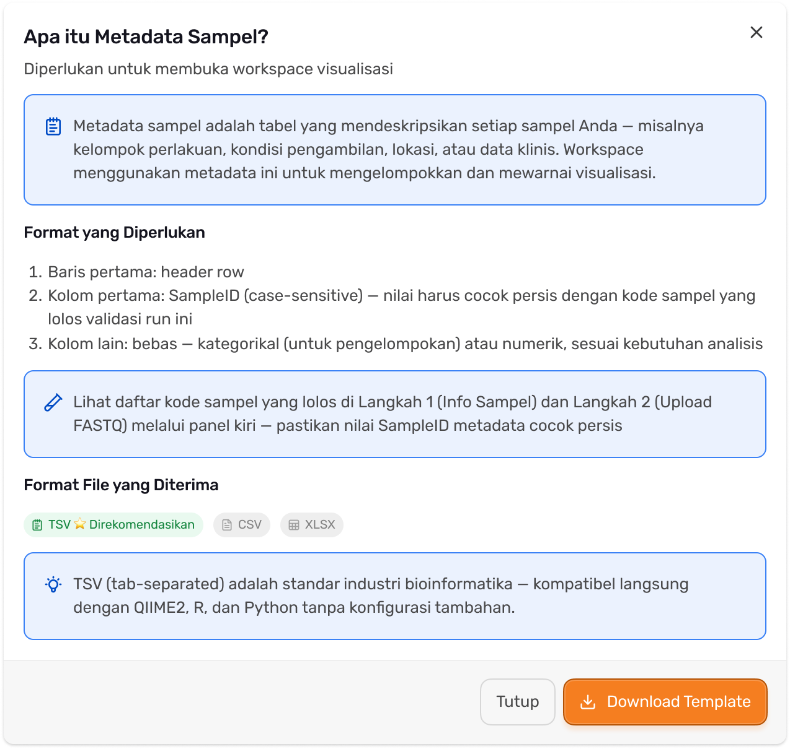
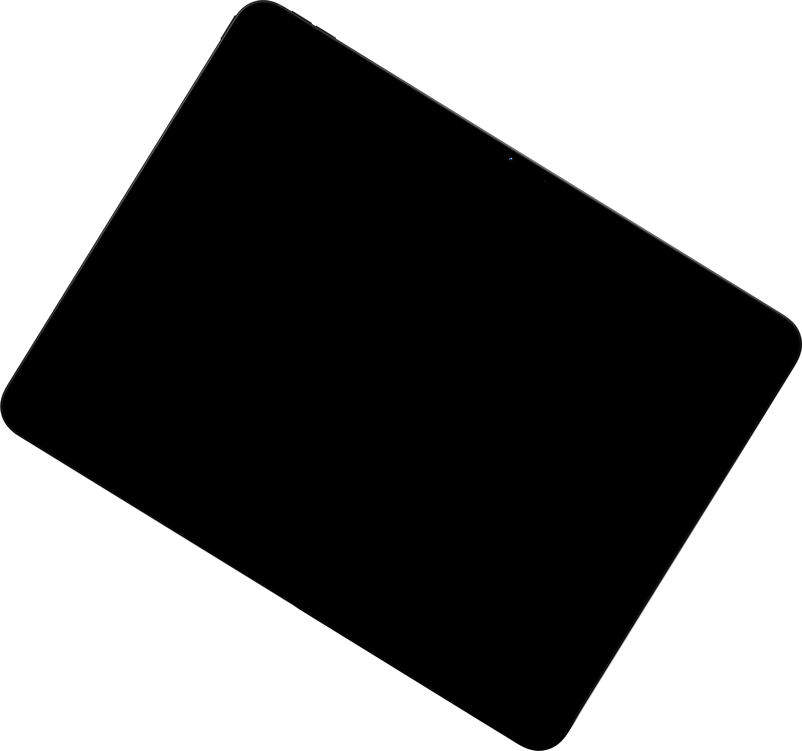
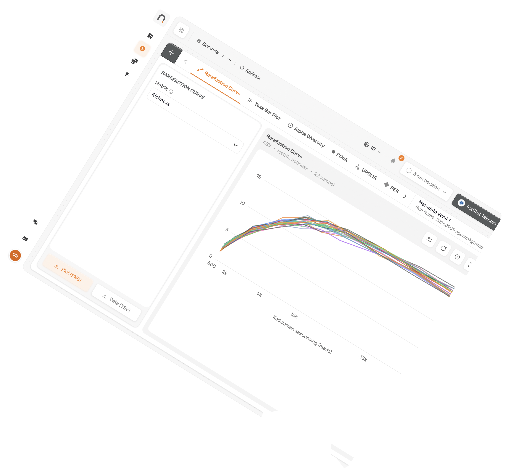
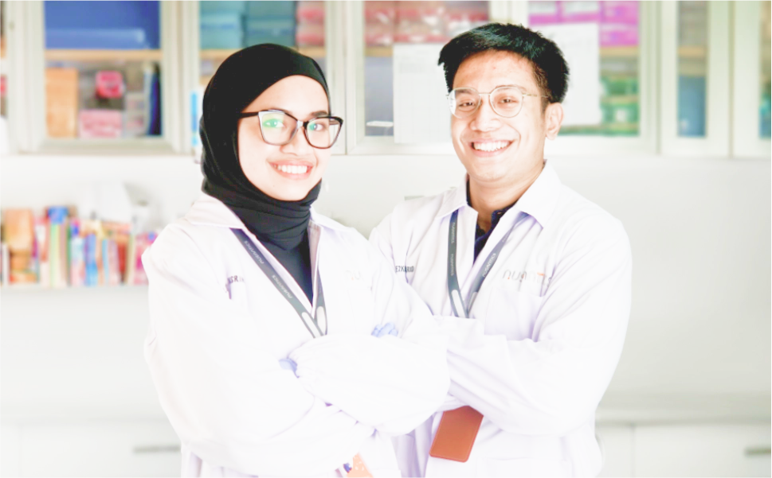
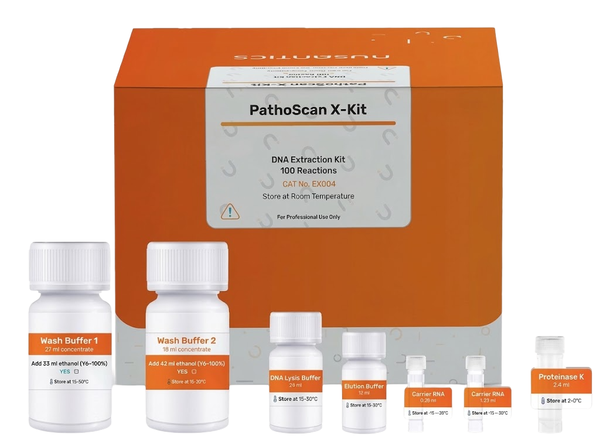

End-to-End Workflow dengan Teknologi SBS Illumina
Komponen esensial untuk sekuensing yang kompatibel dengan teknologi Sequencing by Synthesis Illumina. Akurasi data hingga 99% dan high-throughput.
Solusi alur kerja Next-Generation Sequencing terintegrasi untuk analisis mikrobioma berbasis gen 16S rRNA. Mencakup amplifikasi target V3–V4, clean-up, indexing PCR, sekuensing, hingga analisis bioinformatika di Nusantics Dashboard. Mendukung profiling komunitas mikroba dari feses, air, probiotik, hingga swab kulit.
Pilih ukuran reaksi
No. Katalog
NUS-BQ002.48
Komponen esensial untuk sekuensing yang kompatibel dengan teknologi Sequencing by Synthesis Illumina. Akurasi data hingga 99% dan high-throughput.
Format ReadyMix “Thaw-Mix-Run” pada tahap PCR meminimalisir eror pencampuran MasterMix dan menurunkan risiko kontaminasi.
Akses dashboard.nusantics.com dengan kode unik untuk profiling mikrobioma komprehensif tanpa kerumitan data NGS mentah.

BiomeSeq menghasilkan profil kelimpahan relatif mendekati teoritis yakni pada mock community, menunjukkan akurasi tinggi

BiomeSeq memiliki jarak Bray-Curtis lebih rendah, menunjukkan profiling yang lebih konsisten dan reproducible antar pengulangan.
Detail tahap ini belum tersedia di desain.
Detail tahap ini belum tersedia di desain.
Pemberian indeks pada sampel, purifikasi library, dan normalisasi konsentrasi hingga 4 nM.
Detail tahap ini belum tersedia di desain.
Detail tahap ini belum tersedia di desain.
Akses Nusantics Dashboard dengan kode unik dari bundle. Unggah data 16S rRNA dan dapatkan hasil analisis otomatis.

Step 1
Klaim kode Anda

Step 2
Unggah data sekuensing 16S rRNA

Step 3
Sistem memproses secara otomatis

Step 4
Temukan insight dari data Anda
Upstream: data clean-up, klasifikasi taksonomi hingga level spesies, anotasi fungsional. Downstream: taxa bar plot, alpha diversity, beta diversity. Level taksonomi, metrik (Shannon, Richness, Simpson) dan kelompok data bisa diatur.
Jelajahi Nusantics Dashboard

Research Dashboard
dashboard.nusantics.com
Kualitas ekstraksi adalah penentu awal keberhasilan sekuensing 16S rRNA. PathoScan X-Kit: DNA Extraction Kit (100 reaksi, NUS-EX004.100) untuk sampel darah, gargle, jaringan dan urine.


| Fitur | Spesifikasi |
|---|---|
| Target | Gen 16S rRNA bakteri, daerah hipervariabel V3–V4 |
| Input DNA (jaringan) | DNA total 41,5 ng atau 4,15 ng/µL |
| Input DNA (isolat bakteri) | DNA total 15 ng atau 1,5 ng/µL |
| Input DNA (lingkungan) | DNA total 30 ng atau 3 ng/µL |
| Platform | Kompatibel dengan Illumina® MiSeq® System |
| Aplikasi | Komunitas bakteri pada kulit, saluran pencernaan, air, tanah dan lingkungan |
| Penyimpanan PCR Kit | −20 °C sampai −25 °C |
| Status regulasi | Research Use Only (RUO), hanya untuk penelitian |
| Komponen | 48 reaksi | 96 reaksi | 192 reaksi |
|---|---|---|---|
| No. katalog bundle | NUS-BQ002.48 | NUS-BQ002.96 | NUS-BQ002.192 |
| BiomeSeq 16S rRNA PCR Kit (NUS-BQ001.48) | ×1 | ×2 | ×4 |
| NGS DNA Clean-Up Beads (NUS-CB001) | ×1 | ×1 | ×2 |
| Elution Buffer (NUS-EB001.100) | ×1 | ×1 | ×1 |
| Nextera XT Index Kit v2 Set A (FC-131-2001) | ×1 | ×1 | ×1 |
| Nextera XT Index Kit v2 Set B (FC-131-2002) | — | — | ×1 |
| Illumina PhiX Control v3 (FC-110-3001) | ×1 | ×1 | ×1 |
| MiSeq Reagent Kit | v2, 500 siklus | v2, 500 siklus | v3, 600 siklus |
Ekstraksi: vortex, centrifuge, mikropipet. PCR 16S dan indexing: thermal cycler. Clean-up: magnetic stand. QC: Qubit Fluorometer dan Bioanalyzer atau elektroforesis gel agarosa. Sekuensing: Illumina® MiSeq® System.
Ekstraksi: vortex, centrifuge, mikropipet. PCR 16S dan indexing: thermal cycler. Clean-up: magnetic stand. QC: Qubit Fluorometer dan Bioanalyzer atau elektroforesis gel agarosa. Sekuensing: Illumina® MiSeq® System.
Ekstraksi: vortex, centrifuge, mikropipet. PCR 16S dan indexing: thermal cycler. Clean-up: magnetic stand. QC: Qubit Fluorometer dan Bioanalyzer atau elektroforesis gel agarosa. Sekuensing: Illumina® MiSeq® System.
Ekstraksi: vortex, centrifuge, mikropipet. PCR 16S dan indexing: thermal cycler. Clean-up: magnetic stand. QC: Qubit Fluorometer dan Bioanalyzer atau elektroforesis gel agarosa. Sekuensing: Illumina® MiSeq® System.
Take a look at what our customers mention about our Products & Solutions